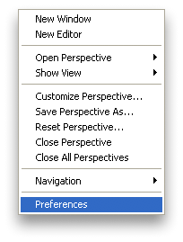
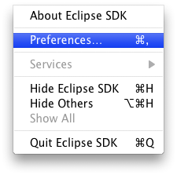
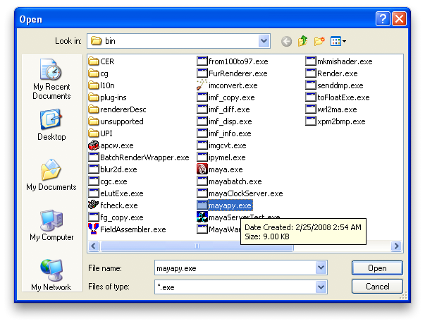
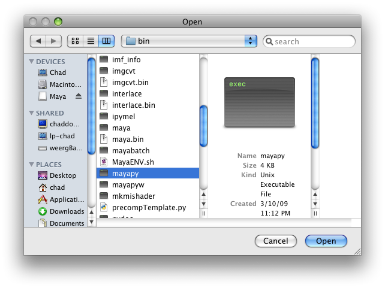
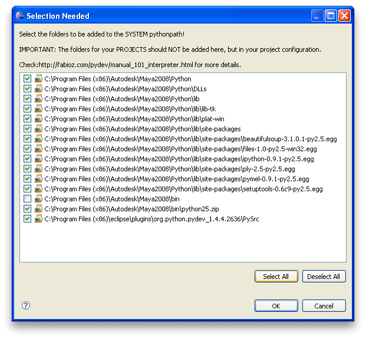
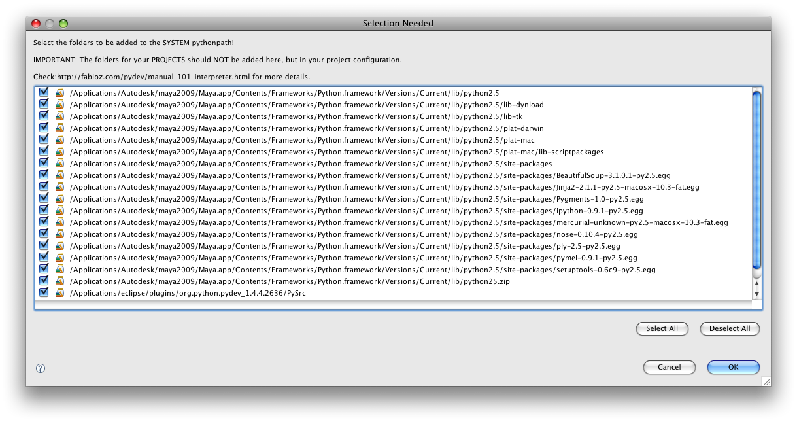
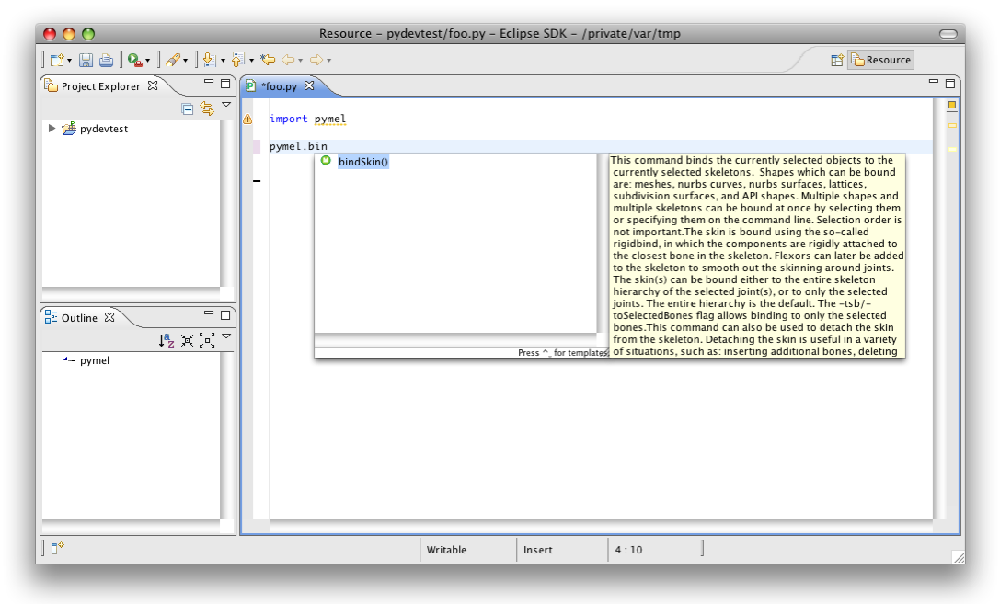

Setting Up PyMEL Autocompletion in Eclipse¶
The methodology for setting up auto-completion has been dramatically simplified with this release. We now include “stub” files which can be used with almost any IDE to provide code completion. These stub files comprise “dummy” versions of the pymel and maya packages: they contain all the function and class definitions along with their documentation strings, but do not contain any functional code. This method (first brought to my attention by Ron Bublitz) has many advantages over using the “real” pymel package for completion:
- easier to setup
- faster and more reliable
- completes ui commands
- completes maya.cmds and maya.OpenMaya
The only disadvantage that has come to my attention is that IDE tools that reveal the source of a function will direct you to the stub packages, which contain no real code and therefore won’t be particularly helpful. However, this is really only a concern for those who are brave enough to delve into pymel code.
Before You Begin¶
These instructions are updated for Pydev 1.4.6, and should work on either Eclipse 3.4.x or 3.5.x
Note
If you checked out PyMEL from our git repo then you will need to generate the stubs first.
To generate stubs:
be sure that pymel is on the path by following the Manual Install method.
open a Maya GUI and run the following in a python tab of the script editor:
import maintenance.stubs maintenance.stubs.pymelstubs()
Adding The Maya Python Interpreter¶
Note
with the introduction of the new completion stubs, it is no longer necessary to use mayapy as your interpreter – any python interpreter will do. However, it’s still a good idea to use Maya’s interpreter to ensure that the site-packages within it are the same as when you are using Maya.
Open the Eclipse preferences window.
Windows OSX under the Window menu: under the Eclipse menu:   In the left pane, drop down to Pydev > Interpreter-Python
Click the New.. button at the top right of the Python Interpreters preferences window
In the window that comes up give your interpreter a name (such as maya2009-osx).
Next, you can either copy and paste the path to your maya interpreter (aka mayapy) or you can click ‘Browse’ and navigate to it.
Note
On OSX, browsing to mayapy is not as easy as it should be. The problem is that it’s buried within Maya.app, which you cannot access in a file browser (thanks Apple!). To get to it, hold down Command+Shift+G to bring up a box to enter a path (that’s the Apple “Command” button, plus Shift, plus the letter G). You can’t use Command-V to paste a path in this browser, but you can right click in the path entry box and choose Paste.
Windows OSX C:\Program Files\Autodesk\Maya2009\bin\mayapy.exe /Applications/Autodesk/maya2009/Maya.app/Contents/bin/mayapy  
{kind=link}
{kind=link}
Once you choose the “mayapy” binary, you’ll get this window:
Windows OSX   On windows: add a check beside python25.zip
then press “OK”
{kind=link}
{kind=link}
- From the list, select the one path that ends with site-packages and click the “remove” button. Remember this path because we are going to re-add it later.
- If you installed PyMEL using the Easy Install method: you’ll see the pymel “egg” in the list of automatically detected site packages. Remove the pymel egg
- Click on the “New Folder” button. In the browser that pops up, navigate to the directory where you extracted the pymel zip file. Under it, there is a folder called extras, under that a folder called completion, and then finally one called py. Choose the py folder and press “OK”.
- Click the “New Folder” button again, and add the site-packages directory you removed earlier. We did this in order to ensure that the stub maya package is found before the real maya package. When you’re done, the main site-packages directory should be somewhere below the extras/completion/py folder you just added.
Testing That It Worked¶
Restart Eclipse
Create a new file from within eclipse ( File / New / File ) named foo.py or whatever you want ( just make sure to include the .py )
Add the following line:
import pymel.core as pm
Save the file. Sometimes this helps force pydev to begin performing completion
Now type:
pm.bin
you should get bindSkin() as a completion.

{kind=link}
Note
If you like to import everything from pymel, aka from pymel.core import *, then you should open the Eclipse preferences, go to Pydev > Editor > Code Completion, and enable Autocomplete on all letter chars and ‘_’
Troubleshooting¶
If you’re still not getting completion:
- Go to Eclipse preferences under Pydev > Editor > Code Completion and increase Timeout to connect to shell to 30 seconds or more.
- Restart Eclipse and retry steps 3-5 above
- Open a log view (Window / Show View / Error Log) and if you see any suspicious errors, post for help at the Pydev suport forum